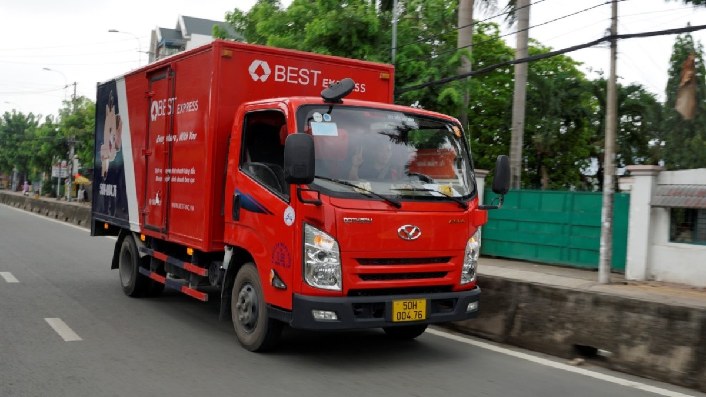
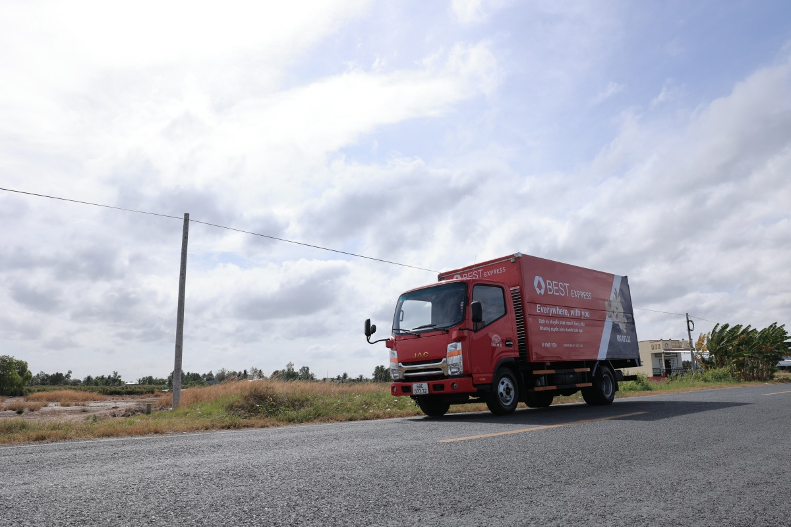
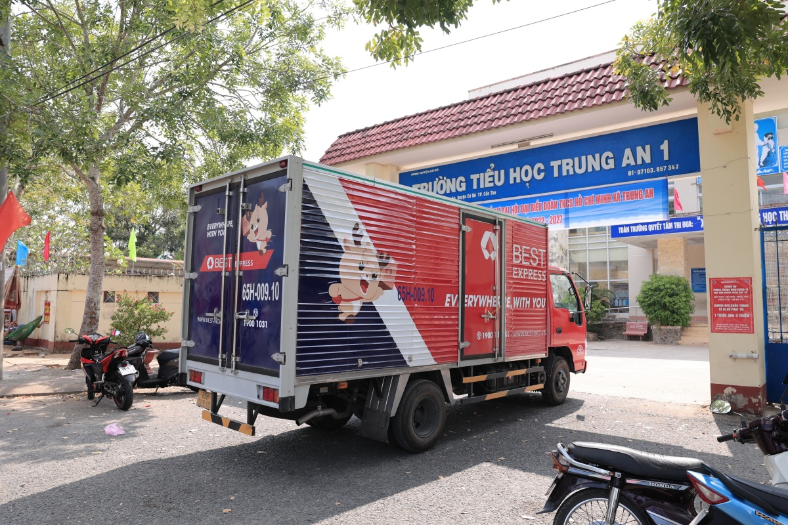
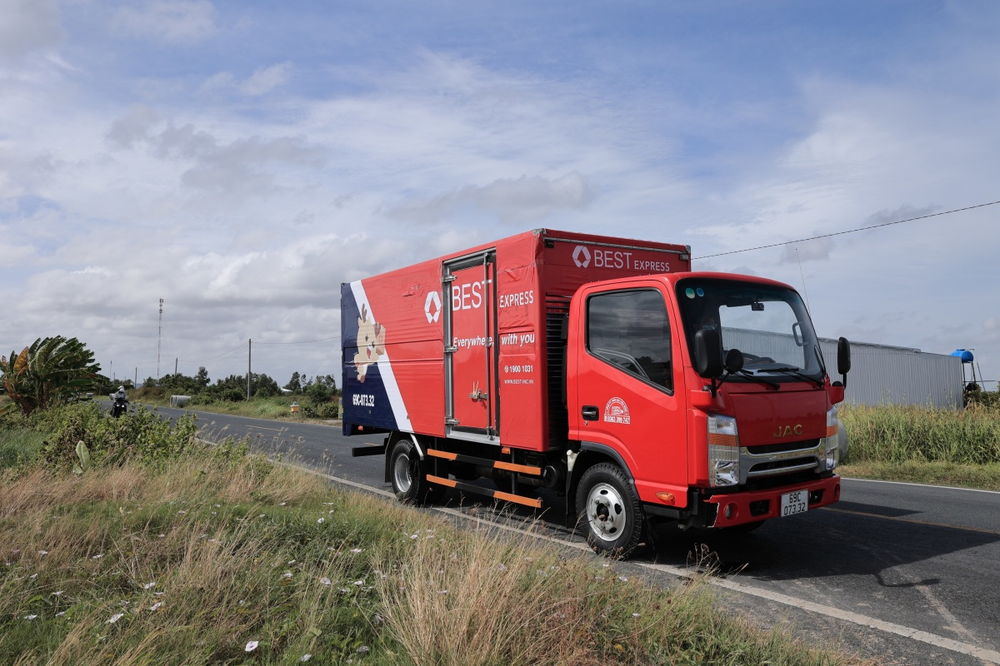
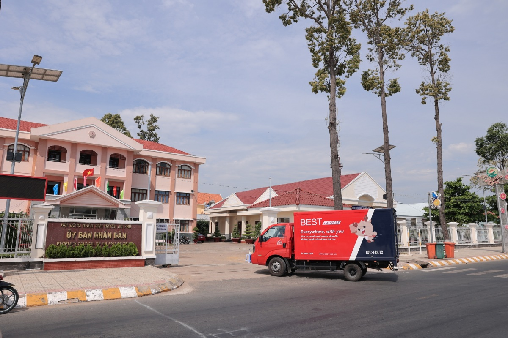
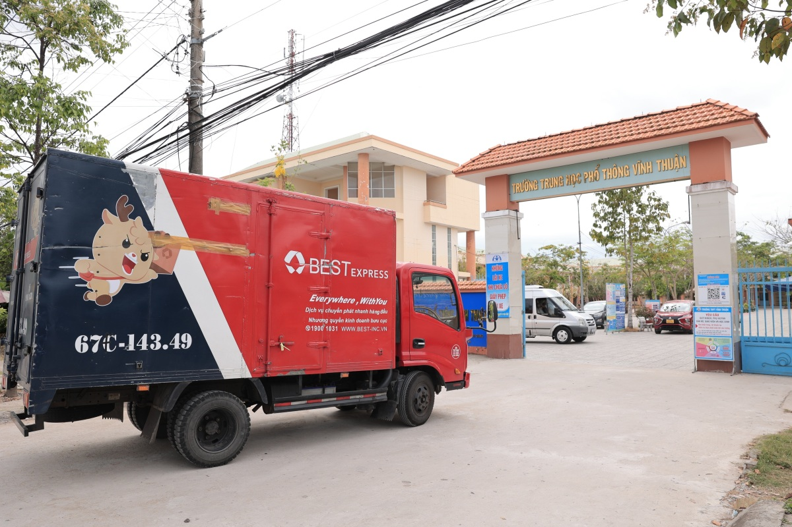
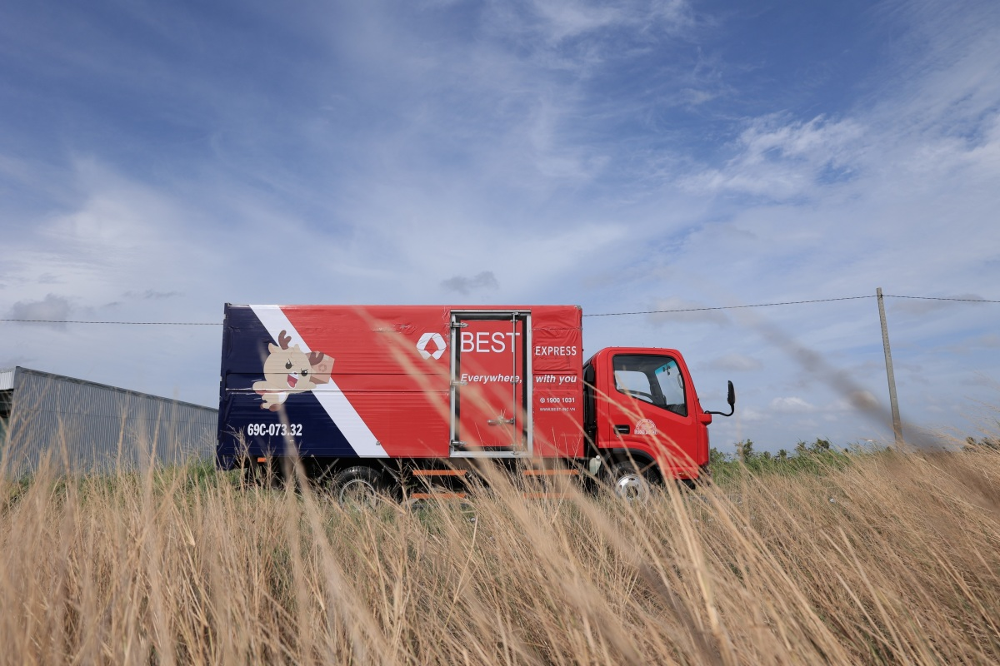
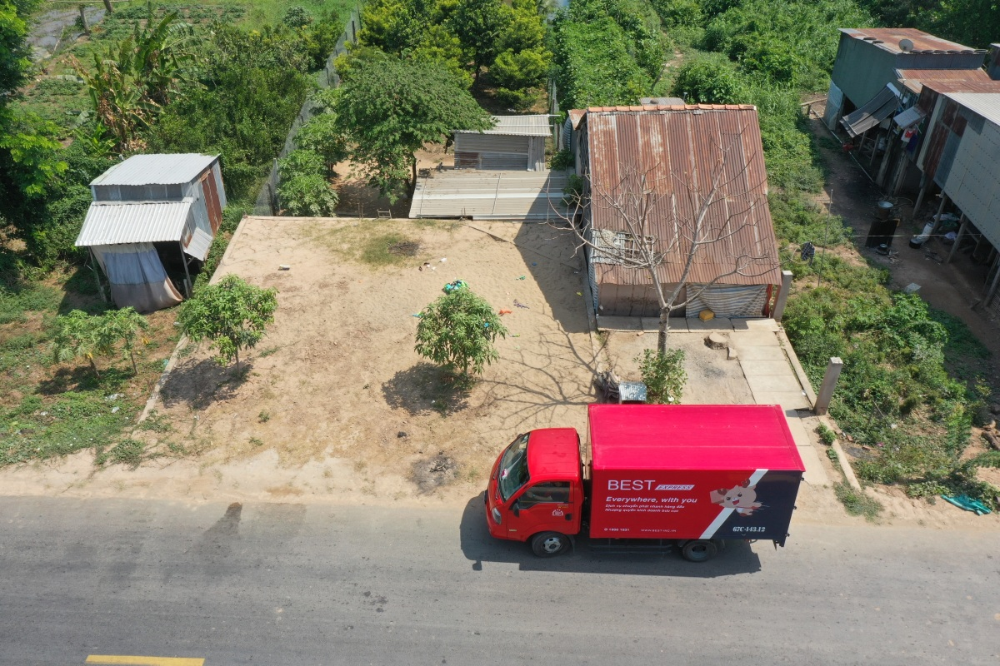
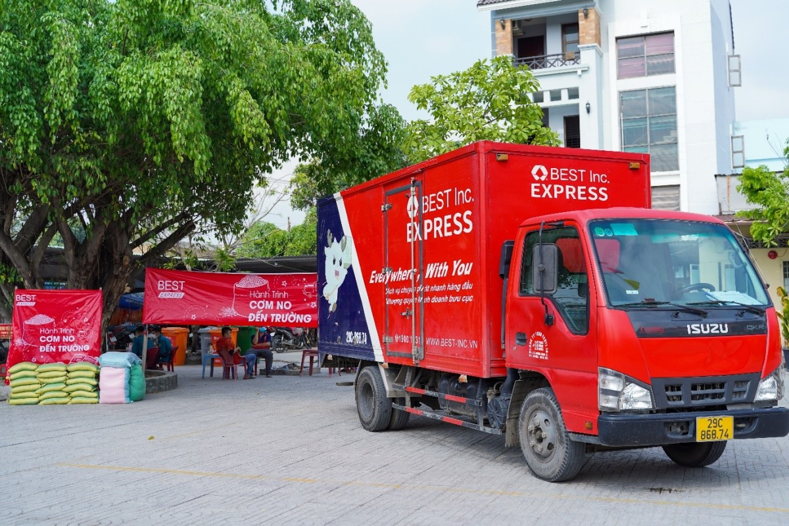

Vượt 700 km đưa gạo đến với trẻ nghèo ĐBSCL
24/03/2022
Hàng nghìn trẻ em cùng hộ nghèo tại 6 huyện, xã các tỉnh miền Tây Nam Bộ nhận hỗ kịp thời từ “Cơm no đến trường”, chương trình thiện nguyện do BEST Express phát động.
Nhờ mạng lưới dịch vụ rộng khắp 63 tỉnh, thành toàn quốc, BEST Express biết đến hoàn cảnh khó khăn của nhiều trẻ em, hộ gia đình nhiều khu vực. Đơn vị đã gấp rút tổ chức hành trình “Cơm no đến trường” giúp những người thiếu thốn điều kiện sinh hoạt, học tập, thức ăn, nhu yếu… cải thiện cuộc sống, yên tâm học tập.
Trà Vinh là điểm đến đầu tiên của hành trình “Cơm no đến trường” tại khu vực Tây Nam Bộ. Từ TP HCM, BEST Express đưa những bao gạo nghĩa tình vượt 127 km đến tận tay các trẻ em, gia đình hoàn cảnh khó khăn tại đây.
Từ Trà Vinh, đội ngũ BEST Express tiếp tục vượt gần 100 km đến điểm Cờ Đỏ, một trong những huyện vùng ven nhiều hộ nghèo tại Cần Thơ. Tại đây, đơn vị đã tổ chức hỗ trợ gạo cho trường tiểu học Trung An 1 với sự phối hợp, hỗ trợ của bưu cục Bình Thủy trong khâu vận chuyển lẫn nhân lực, giúp hành trình diễn ra suôn sẻ.
Từ Cần Thơ, đội ngũ tiếp tục hành trình dài trên những cung đường miền Tây, vượt hơn 110 km đến huyện An Phú (An Giang), giúp đỡ thêm nhiều người thiếu thốn cơ sở vật chất và thực phẩm tại vùng giáp biên giới.
Trên mỗi cung đường của hành trình “Cơm no đến trường” đều có sự góp sức, hỗ trợ nhiệt tình của chính quyền, bưu cục địa phương.

Huyện Phong Đông, Vĩnh Thuận, Kiên Giang là địa điểmt tiếp theo BEST Express ghi nhận nhiều hộ nghèo, người già neo đơn cần trợ giúp. Sau khi hỗ trợ các em nhỏ và gia đình tại An Phú, đoàn xe di chuyển qua những cánh đồng lúa xanh mướt, đến với khu vực cần hỗ trợ này.
Tổng cộng đội ngũ BEST phải vượt gần 210 km đường dài, cùng Đoàn thanh niên Công an tỉnh hỗ trợ cho cả hai xã Phong Đông và Vĩnh Thuận những phần quà nghĩa tình. Đồng thời, đơn vị còn mở rộng hoạt động, tặng gạo và đồ dùng học tập, nhu yếu phẩm không chỉ cho các em học sinh mà gồm cả người già neo đơn, các gia đình có hoàn cảnh đặc biệt trên địa bàn.
Chưa kịp nghỉ ngơi, đoàn xe đỏ của BEST Express tiếp tục lên đường, vượt thêm 130 km ngay trong đêm, đến Cà Mau, cực Nam Tổ quốc ngay rạng sáng hôm sau.
Tính từ TP HCM đến điểm cuối của hành trình, doanh nghiệp chuyển phát này đã mang chương trình “Cơm no đến trường” vượt gần 700 km đến cực Nam Tổ quốc.
Tại cả 5 tỉnh miền Tây Nam Bộ, đơn vị đều nhận sự trợ giúp nhiệt tình của các cấp chính quyền và bưu cục địa phương, góp phần vào thành công đưa gạo và những phần quà ý nghĩa đến tận tay hàng nghìn em nhỏ tại mỗi địa phương đoàn xe đỏ đi qua.
BEST Express kết thúc hành trình phía Nam của mình bằng chuyến xe quay về xã Tân Phú Trung, Củ Chi (TP HCM), chạm đến những trẻ em hoàn cảnh đáng thương giữa đô thị náo nhiệt.
“Chúng tôi đã nhận thông tin yêu cầu hỗ trợ từ các nhân viên trong hệ thống dịch vụ trên toàn quốc và sớm triển khai chương trình để kịp thời giúp đỡ những mảnh đời khó khăn. Đội ngũ BEST Express sẽ tiếp tục lên đường, mang ‘Cơm no đến trường’ chạm đến nhiều trẻ em hơn nữa, góp phần cải thiện cuộc sống, để các em an tâm học tập, hướng đến tương lai tươi sáng”, đại diện BEST Express chia sẻ.